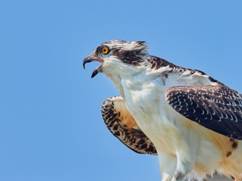
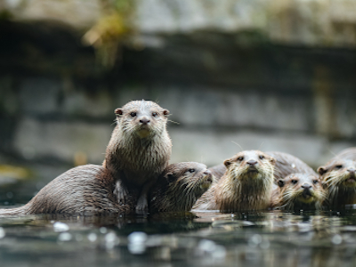
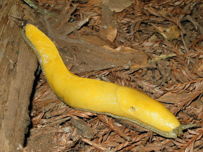
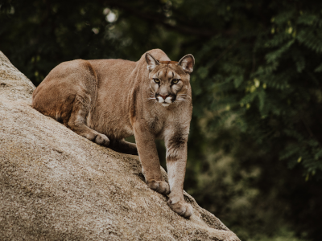

T.R.A.C.K. Gallery Page
Seahawk |
Otter |
Banana Slug |
Cougar
Seahawk
Seahawk by Jongsun Lee on Unsplash
Facts about the Seahawk (Osprey) from sfbayospreys.org:
Their vision is three times better than human vision. Their wing markings make a sharp M or W pattern. Ospreys can live as long as 15 to 20 years.
Back to top
Otters
Otters by Lilian Dibbern on Unsplash
Facts about the California Sea Otter from bigsurcalifornia.org:
One of the sea otter's favorite foods is Abalone. Sea Otters eat while laying on their back in the water. Sea Otters can eat 1/4 of their body weight per day.
Back to top
Banana Slug
Banana Slug by Jim Whitehead from Flickr
Facts about the California Banana Slugs from parksconservancy.org:
They are the second largest slug in the world. Their slime is composed of crystals and is used medically. Slugs are detritivores. Detritivores eat dead leaves, plants and scat.
Back to top
Cougar
Cougar by Priscilla Du Preez from Unsplash
Facts about the Cougar from naturemappingfoundation.org:
Cougars can jump almost 20 feet high and 40 feet horizontally. They are the second largest cat in the Americas, and the largest cat specie that can purr. Cougars are also called pumas, mountain lions and panthers.
Back to top